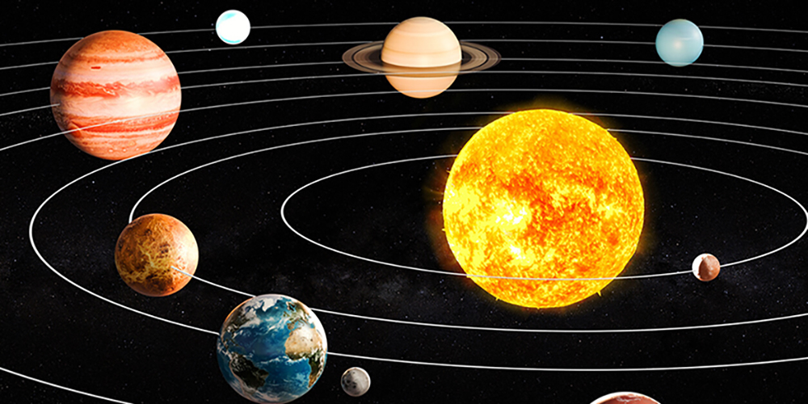
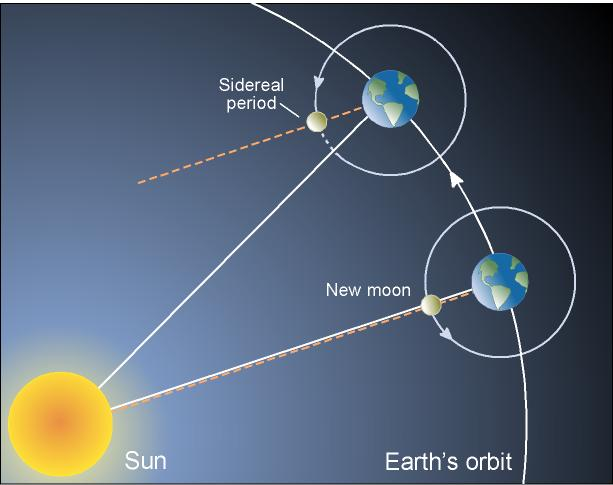
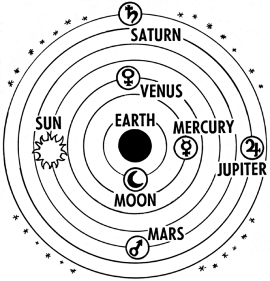

Aryabhata correctly insisted that the Earth rotates about its axis daily, and that the apparent movement of the stars is a relative motion caused by the rotation of the Earth, contrary to the then-prevailing view that the sky rotated. This is indicated in the first chapter of the Aryabhatiya, where he gives the number of rotations of the Earth in a yuga.
Aryabhata described a geocentric model of the Solar System, in which the Sun and Moon are each carried by epicycles. They in turn revolve around the Earth. In this model, which is also found in the Paitamahasiddhanta, the motions of the planets are each governed by two epicycles, a smaller manda (slow) and a larger sīghra (fast). The order of the planets in terms of distance from earth is taken as: the Moon, Mercury, Venus, the Sun, Mars, Jupiter, Saturn, and the asterisms
The positions and periods of the planets were calculated relative to uniformly moving points. In the case of Mercury and Venus, they move around the Earth at the same mean speed as the Sun. In the case of Mars, Jupiter, and Saturn, they move around the Earth at specific speeds, representing each planet's motion through the zodiac. Most historians of astronomy consider that this two-epicycle model reflects elements of pre-Ptolemaic Greek astronomy. Another element in Aryabhata's model, the sighrocca, the basic planetary period in relation to the Sun, is seen by some historians as a sign of an underlying heliocentric model
Solar and lunar eclipses were scientifically explained by Aryabhata. He states that the Moon and planets shine by reflected sunlight. Instead of the prevailing cosmogony in which eclipses were caused by Rahu and Ketu (identified as the pseudo-planetary lunar nodes), he explains eclipses in terms of shadows cast by and falling on Earth. Thus, the lunar eclipse occurs when the Moon enters into the Earth's shadow (verse gola.37). He discusses at length the size and extent of the Earth's shadow (verses gola.38-48) and then provides the computation and the size of the eclipsed part during an eclipse. Later Indian astronomers improved on the calculations, but Aryabhata's methods provided the core. His computational paradigm was so accurate that 18th-century scientist Guillaume Le Gentil, during a visit to Pondicherry, India, found the Indian computations of the duration of the lunar eclipse of 30 August 1765 to be short by 41 seconds, whereas his charts (by Tobias Mayer, 1752) were long by 68 seconds.


Considered in modern English units of time, Aryabhata calculated the sidereal rotation (the rotation of the earth referencing the fixed stars) as 23 hours, 56 minutes, and 4.1 seconds; the modern value is 23:56:4.091. Similarly, his value for the length of the sidereal year at 365 days, 6 hours, 12 minutes, and 30 seconds (365.25858 days) is an error of 3 minutes and 20 seconds over the length of a year (365.25636 days).
As mentioned, Aryabhata advocated an astronomical model in which the Earth turns on its own axis. His model also gave corrections (the sigra anomaly) for the speeds of the planets in the sky in terms of the mean speed of the Sun. Thus, it has been suggested that Aryabhata's calculations were based on an underlying heliocentric model, in which the planets orbit the Sun, though this has been rebutted. It has also been suggested that aspects of Aryabhata's system may have been derived from an earlier, likely pre-Ptolemaic Greek, heliocentric model of which Indian astronomers were unaware, though the evidence is scant. The general consensus is that a synodic anomaly does not imply a physically heliocentric orbit and that Aryabhata's system was not explicitly heliocentric
